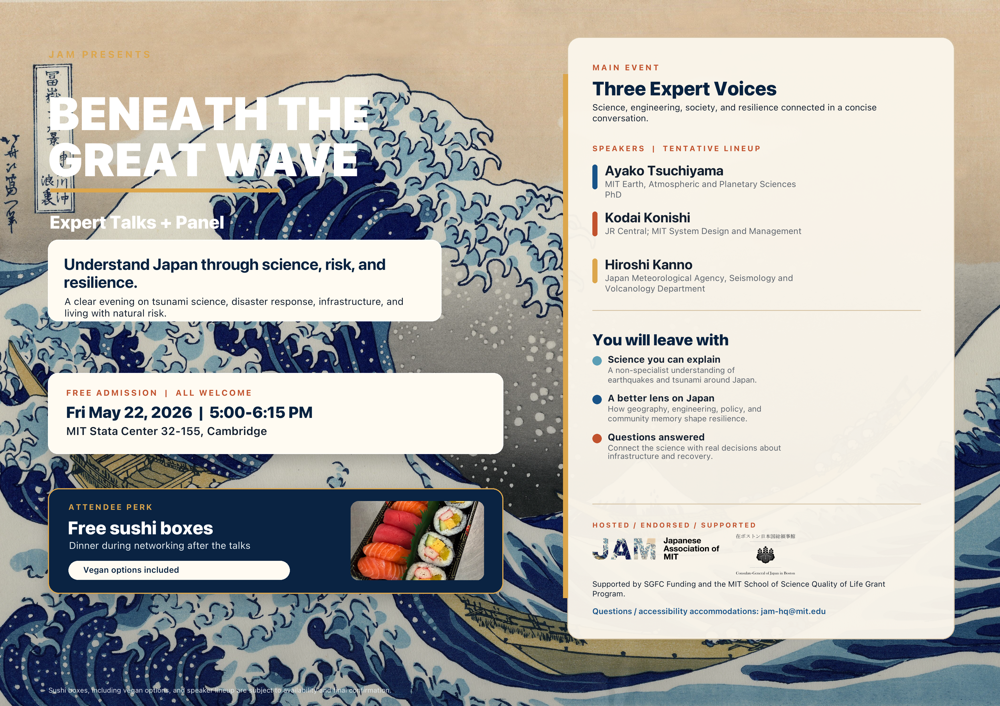

Science
Why earthquakes and tsunamis happen around Japan, and how scientists read the forces beneath the surface.
Expert talks + panel
Understanding Japan through science, risk, and resilience.

Program
The event combines a short tsunami video, expert talks, Q&A, and audience conversation. Sushi boxes will be available during networking after the talks.
Why earthquakes and tsunamis happen around Japan, and how scientists read the forces beneath the surface.
How transportation, built systems, and disaster planning respond to recurring natural risk.
How communities prepare, recover, and preserve knowledge across generations.
Confirmed speakers
MIT Earth, Atmospheric and Planetary Sciences PhD.
JR Central; MIT System Design and Management.
Japan Meteorological Agency, Seismology and Volcanology Department.
Former Director-General for Disaster Management, Cabinet Office; former MLIT Deputy Vice-Minister for Policy Coordination.
Archive